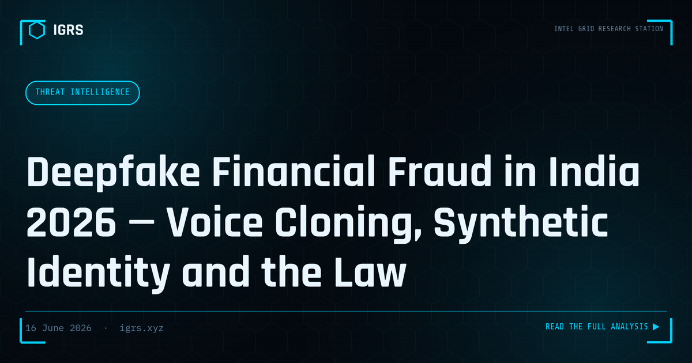

Deepfake Financial Fraud in India 2026 — Voice Cloning, Synthetic Identity and the Law
Two years ago, deepfakes were treated as a curiosity. In 2026 they are a mainstream instrument of financial crime in India — and the technology has moved faster than most defences. This briefing sets out what is actually happening, how the attacks are built, why detection has become unreliable, and what individuals, organisations and investigators can do within the current Indian legal framework.
The scale of the problem
The numbers describe a threat that has crossed from emerging to systemic. According to the Thales Data Threat Report cited widely in 2026, roughly 65% of Indian organisations report having already experienced a deepfake-driven attack. A 2025 analysis of AI scams found that about 47% of Indian adults have either been a victim of, or personally know a victim of, an AI voice-cloning or deepfake scam — nearly double the global average of around 25%. Of Indian voice-scam victims, an estimated 83% suffered a monetary loss, with close to half losing more than fifty thousand rupees.
The supply side has exploded in parallel. Industry estimates put the volume of deepfake media at around half a million files in 2023, rising to several million by 2025, with year-on-year growth measured in the hundreds of percent. Against this backdrop, official figures presented in Parliament recorded more than 24 lakh cybercrime complaints on the National Cybercrime Reporting Portal in 2025, with reported fraud losses of about ₹22,495 crore — and a recovery rate that remains painfully low.
How a deepfake fraud is actually built
It helps to separate the technology from the social engineering. The deepfake is only the delivery mechanism; the fraud still relies on the same psychological levers — authority, urgency, secrecy and fear — that have always driven scams. The common variants seen in India fall into a few patterns.
1. Executive voice and video impersonation
An attacker clones the voice — and increasingly the video likeness — of a senior executive, then instructs a finance employee to make an urgent transfer or change vendor bank details. The technique reached global prominence with a Hong Kong case in early 2024 in which an employee was deceived by AI-generated video of company leadership on a conference call and authorised a transfer reported at around USD 25 million. The same playbook is now reaching Indian corporate finance teams, where it functions as an upgraded form of Business Email Compromise.
2. Family-emergency voice cloning
A short sample of a person's voice — often scraped from social media or a previous call — is enough to generate a distressed message claiming a relative has had an accident, been arrested, or needs money immediately. Non-resident Indian families are frequently targeted, because distance and time-zone pressure make verification harder.
3. Celebrity and brand endorsement scams
Fabricated videos show a recognisable public figure or a trusted brand spokesperson endorsing a fake investment scheme or trading app. The synthetic credibility lowers a victim's guard before they are funnelled into a fraudulent platform showing fabricated profits.
4. The deepfake "digital arrest"
In the digital-arrest scam, fraudsters impersonate police, customs or other officials over video call, sometimes using synthetic uniforms, fake warrants and forged court documents, and coerce victims into transferring money while keeping them isolated. These impersonation scams have accounted for a meaningful share of total cybercrime losses, and at least one publicly reported case involved a prominent industrialist who was pressured into transferring a very large sum before a partial recovery was achieved through cybercrime officials.
5. Non-consensual intimate imagery (NCII)
More than nine in ten explicit deepfakes circulating online target women through morphing and synthetic sexual imagery. This is not only a privacy harm but increasingly a coercion and extortion vector, and reported cybercrime complaints involving women have risen sharply over the past two years.
Why detection is no longer reliable
Researchers note that voice cloning crossed the "indistinguishable threshold" in 2026 — it is no longer realistic to tell a cloned voice from a genuine one by ear. Visual deepfakes still leave occasional artefacts (unnatural blinking, lighting mismatches, edge warping around the face, audio-lip desynchronisation), and detection tools exist, but they are in a continuous arms race with generation models and cannot be relied upon as a sole control. The practical conclusion for defenders is decisive: authentication must shift from "does this look and sound real?" to "have I verified this through an independent, pre-agreed channel?"
India's regulatory response
India has chosen a horizontal regulatory approach — using existing technology and data-protection law rather than a single deepfake-specific statute. The key development is a set of IT rules introduced on 20 February 2026 that compress takedown timelines dramatically:
- 3 hours to remove a deepfake following a court or government order;
- 36 hours to act on user or government complaints, under an earlier advisory; and
- 2 hours to remove non-consensual intimate imagery after a valid report.
The enforcement teeth come from Rule 7 of the IT Rules, 2021: non-compliance can strip an intermediary of safe-harbour immunity under Section 79 of the Information Technology Act, exposing it to civil or criminal action. Complementing this are the Digital Personal Data Protection Act, 2023, which governs misuse of personal data, and the Bharatiya Nyaya Sanhita, 2023, which criminalises identity theft, impersonation and organised cyber-enabled fraud. Analysts have suggested pairing this framework with stronger public-awareness and financial-literacy campaigns, drawing on approaches such as the EU AI Act and Singapore's detection mandates.
Defensive playbook — for individuals
- Adopt a verification protocol. Treat any urgent voice or video request for money or credentials as unverified until you call back on a known number. Agree a family or team "safe word" for emergencies.
- Slow the transaction down. Fraud depends on urgency. A deliberate pause to verify defeats most voice-clone and digital-arrest scripts.
- Limit your voice and face footprint. The more public audio and video of you exists, the easier you are to clone. Review what is public.
- Never pay, and preserve evidence. Capture screenshots, URLs, timestamps and chat logs. Report immediately to the 1930 helpline and the National Cybercrime Reporting Portal — speed is what enables mule-account freezes.
- For intimate-image abuse, use StopNCII.org to create a blocking fingerprint, request platform takedown under the 2026 rules, and use search-engine personal-information removal tools.
Defensive playbook — for organisations
- Re-engineer payment authorisation. Require out-of-band, multi-person verification for fund transfers and vendor bank-detail changes. No single voice or video call should be able to authorise a payment.
- Train finance and front-office staff specifically on executive-impersonation and deepfake scenarios, not just generic phishing.
- Establish a takedown and incident path aligned to the 2026 timelines, with templates ready for court/government orders and platform reporting.
- Preserve forensic evidence with hash integrity, and report qualifying incidents to CERT-In within the mandated window.
The investigator's view
From a digital-forensics standpoint, deepfake fraud is rarely solved by analysing the media alone. The durable evidence sits around it: the account that distributed the content, the payment trail into and out of mule accounts, the infrastructure hosting a fake platform, and the metadata of the delivery channel. Investigators should treat the synthetic artefact as one node in a wider graph, preserve it properly for admissibility, and pivot to the financial and infrastructure trails where attribution and recovery are actually possible.
Legal context (India)
| Provision | Relevance |
|---|---|
| S.66C IT Act | Identity theft — fraudulent use of another's electronic identity, including a cloned likeness or voice |
| S.66D IT Act | Cheating by personation using a computer resource — core provision for impersonation fraud |
| S.66E / S.67 / S.67A IT Act | Violation of privacy; publishing obscene / sexually explicit material — applied to NCII deepfakes |
| S.79 IT Act + Rule 7, IT Rules 2021 | Intermediary safe harbour and its loss on non-compliance with takedown obligations |
| S.319 BNS 2023 | Cheating by personation |
| S.336 / S.340 BNS 2023 | Forgery; making or using a forged electronic record (e.g. fake warrants, documents) |
| S.351 BNS 2023 | Criminal intimidation — relevant to sextortion and coercive "digital arrest" scripts |
| DPDP Act 2023 | Obligations around personal data used to train or target a deepfake; breach notification |
| S.94 BNSS / S.63 BSA 2023 | Production of records from intermediaries; electronic-evidence certificate for admissibility |
Note: the exact charges depend on the facts established by investigators. The provisions above are indicative of how deepfake-enabled fraud is typically framed in India.
Bottom line
Deepfake fraud has matured into an industrial technique, and the era of trusting a familiar face or voice is over. The defences that work are not technological detection alone but disciplined verification, slowed-down transactions, a small public footprint, and fast reporting. India's 2026 rules give victims real takedown leverage, but prevention still rests with process. For investigators, the synthetic media is the lure — the money and infrastructure trails are where the case is built.